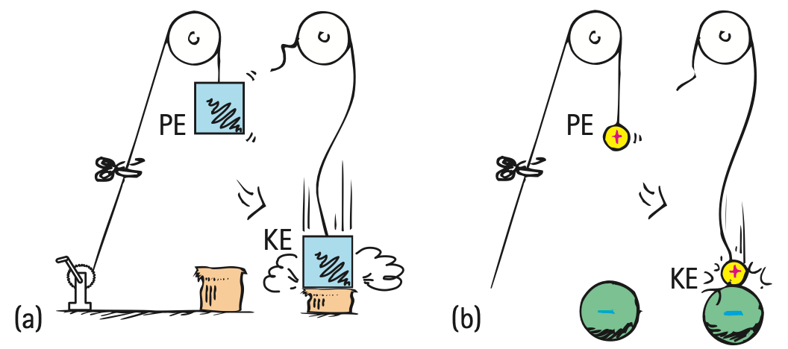

1. In words, what does electric potential energy describe about separated charges?
2. Define voltage in terms of energy and charge.
3. What quantity is measured as charge passing a point per unit time?
4. Why is an unbroken conducting path required for sustained current?
5. State one difference between charge flow and electrical energy transfer in a circuit.
6. A source transfers 48 J of energy to 6 C of charge. Calculate the potential difference.
7. A wire carries 20 C of charge past a point in 5 s. Calculate the current.
8. Use the energy-conversion figure to explain how separated charges can store electric potential energy that later changes form.

9. Two devices each operate across 9 V. Device A moves 2 C while Device B moves 5 C. Compare the energy transferred to the two charge amounts using $E=Vq$.
10. A lamp circuit has a battery but one switch is open. Explain why voltage may exist across parts of the circuit even though sustained current is absent.
11. A student says, “The 9 volts leave the battery, flow through the lamp, and come back as fewer volts.” Diagnose the wording and replace it using potential difference, current, and energy transfer.
12. Compare the battery–pump analogy with a real electric circuit: identify one useful similarity and one limitation so the analogy does not imply that voltage itself is a flowing substance.
13. Electric potential energy is associated with
14. Voltage is best described as
15. Current is
16. A sustained current requires
17. Which statement best distinguishes charge from energy in a lamp circuit?
18. A source transfers 30 J to 5 C. Its voltage is
19. A charge-flow sensor counts 21 C crossing a point during a 7 s interval. What current does that represent?
20. Which revision best replaces “voltage flows through the circuit”?